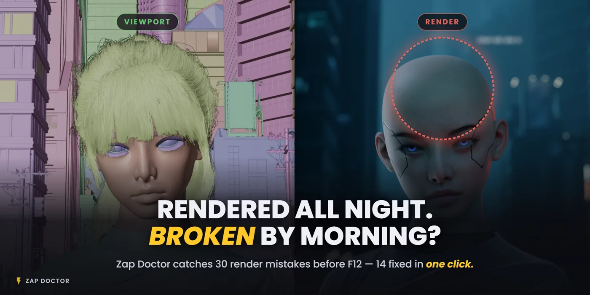
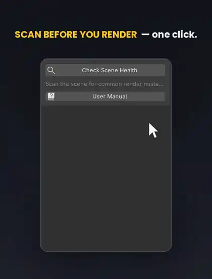
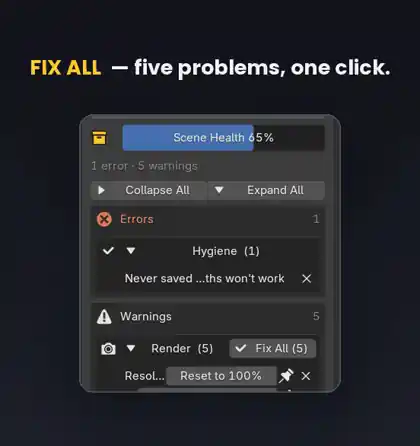
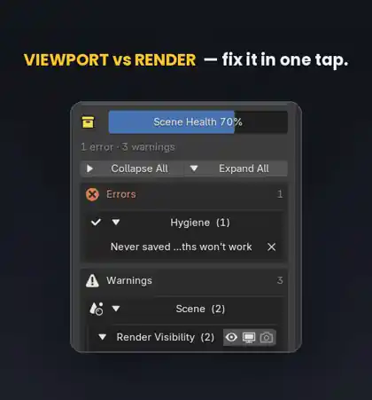
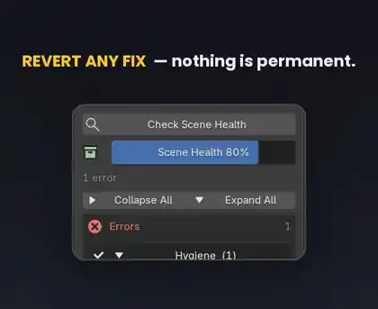

You queue an overnight render, go to bed, and wake up to a half-rendered frame, a missing texture, or an empty output folder. Zap Doctor scans the scene for the mistakes that quietly ruin a final render, sorts them by severity, and fixes most of them with one click.

Four new checks bring it to 34, and an optional Render Guard can move the scan to the moment you press F12. Off by default, so nothing about your current workflow changes until you turn it on.
A render region left switched on, the hero object disabled for render the whole time, a view transform stuck on Raw. None of it is hard to spot — you just didn’t look, because there are dozens of settings to check and no reason to suspect any one of them.
So the cost never lands at render time. It lands in the morning, on a frame you cannot use and hours you cannot get back.
Press Check Scene Health and the scan reports a single score, with every issue grouped underneath it as Error, Warning or Info. It counts kinds of problem, not objects: one broken texture path shared across forty objects is one problem, and the gauge treats it that way.
Scan time depends on how many textures you reference and where they live, not on how big the scene is. Most of the work is checking files on disk, so a heavy scene with local textures clears in about the time a light one does.

Create the output folder. Reset resolution to 100%. Clear the render region. Switch to AgX. Use the GPU. Purge orphan data. Where the fix is unambiguous, one click ends it, and you move on.

A modifier disabled in the viewport but on for render is usually deliberate. So where a fix could be the wrong call, Zap Doctor shows you the real toggle instead of deciding for you. It points; you choose.

Every fix is logged in one line under Recently Fixed, with a Revert button beside it. Nothing happens silently, and nothing is one-way — fix something you didn’t mean to, and put it back.
Dismiss an issue for a single scan, or pin it to stay hidden across every scan. Any individual check can be switched off for good in Preferences.

Render Guard moves the scan to the moment you actually render. Both switches live in Preferences and both start off, so your current workflow is untouched until you choose otherwise.
Guard the render shortcut. F12 and Ctrl+F12 scan first. If something would ruin the render you get the list and a choice; if the scene is clean it renders straight through, exactly as before.
Report errors in background renders. A blender -b render prints blocking issues to the console before it starts, so a render-farm log carries them.
Stated plainly: the shortcut guard is bound to a key, so a render reached another way — the Render menu, a rebound key, another add-on, the command line — goes around it. The background report is what covers command-line renders. And neither can stop a render that has already begun; Blender gives an add-on no way to do that. Both report, and the decision stays yours.
The v1.3 footage of the F12 prompt is being captured. This slot holds its place until the clip is ready.
Four of these are new in v1.3: render passes a format can’t store, video output splitting at 2 GB, a compositor File Output node that writes nothing, and a frame range that runs past the last keyframe.
Out of the box, Zap Doctor scans when you press the button and not before — not on file load, not in the background. Render Guard is the one thing that changes that, and you turn it on yourself.
There is no network access anywhere in the add-on. The Report a Bug link opens your browser; the add-on itself never sends anything.
A perpetual licence with free updates. Thirty-four checks across output, scene, render, assets and file hygiene. One-click fixes on more than half of them, each one logged and revertible. An optional Render Guard for F12 and the render farm. And an add-on that keeps working with your internet unplugged.
No. By default it scans only when you press the button, and it has no network access at all. Render Guard, off by default, is the only thing that adds an automatic scan — on F12 or a background render — and you turn it on yourself.
It stops you, before the render starts, by showing what would go wrong. Once a render has begun, Blender gives an add-on no way to abort it, so we don’t claim to. And because the shortcut guard is bound to a key, renders started from the menu, the command line or another add-on go around it — the background report is what covers command-line jobs.
Every fix is one line in the Recently Fixed log with a Revert button. Put it straight back. And where a fix might be the wrong call, it doesn’t fix at all — it shows you the toggle.
Scan time follows how many textures you reference and where they live, not the object count. Most of the work is checking files on disk, so a big scene with local textures is quick.
4.3 and newer. The test suite is run against 4.3, 4.4, 4.5, 5.0, 5.1 and 5.2 on every release, and nothing is promised that hasn’t been tested.
Catch the render-ruining mistakes before you hit F12 — and fix most of them in one click.